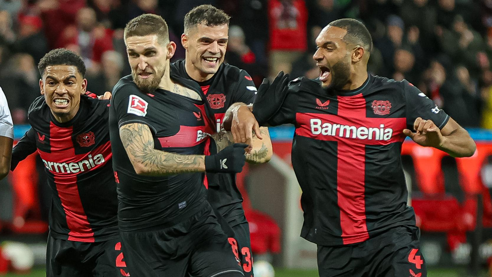

Bayer Leverkusen Ties Porto's Unbeaten Record
In an unprecedented display of consistency and skill, Bayer Leverkusen has officially tied FC Porto's long-standing record of 48 unbeaten games in domestic league play.
This remarkable achievement brings Leverkusen to the forefront of European football, showcasing a tactical mastery and team cohesion that echoes Porto's legendary 2010-2011 season.
A Look at the Numbers:
- Leverkusen's unbeaten streak started on May 14, 2023.
- The team has scored over 120 goals during this period while conceding fewer than 30.
- Leverkusen's manager, cited for his strategic acumen, credits the squad's depth and mental toughness as key factors in their success.
As Leverkusen prepares to extend their record in upcoming fixtures, fans and pundits alike will be watching closely to see if they can establish a new benchmark in league history.